My projects
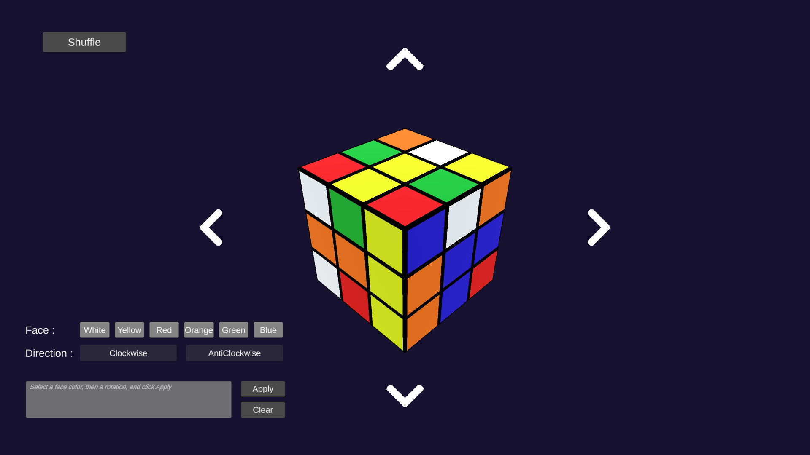
Rubik's Cube
Unity and C#
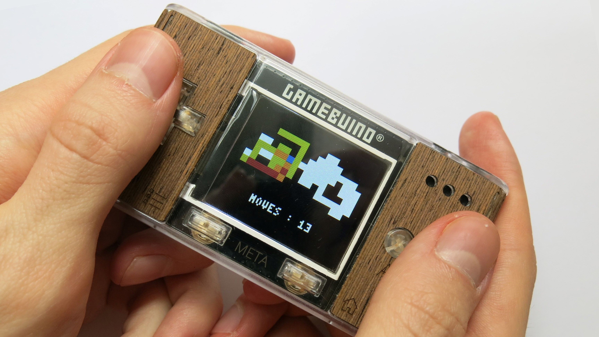
Slide'n'Ride
C and Gamebuino API
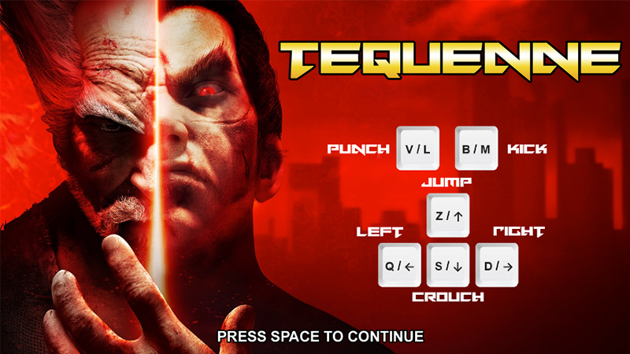
Tequenne
Irrlicht and C++
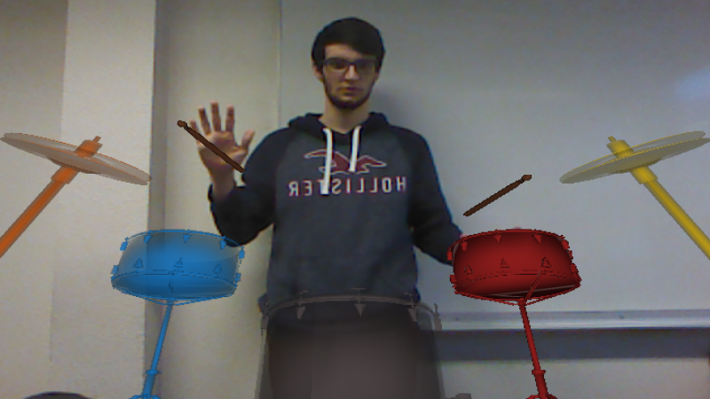
Kinect project
C++, OpenNI and OpenGL
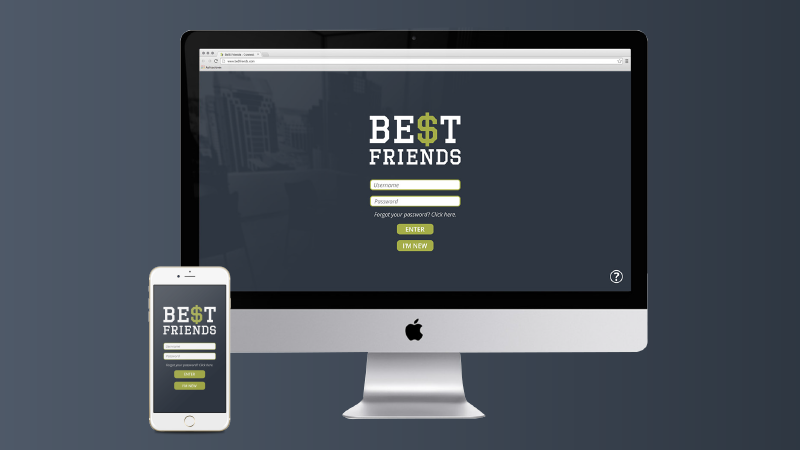
Be$tFriends
PHP/SQL and HTML/CSS/Javascript
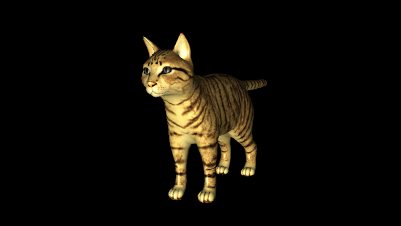
GPU programming
C++ and OpenGL
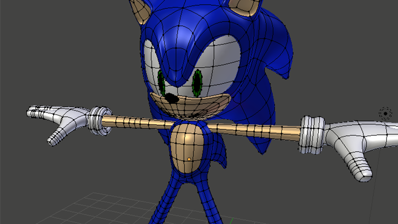
Sonic the Hedgehog
Blender
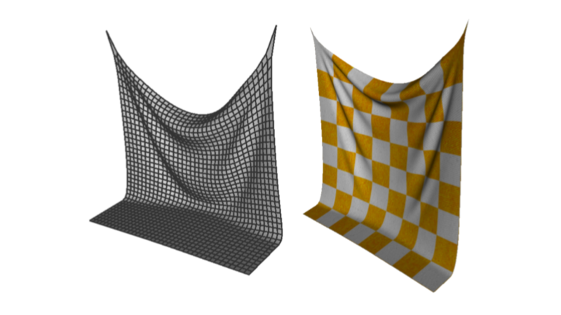
Animation - Simulation
C++ and OpenGL
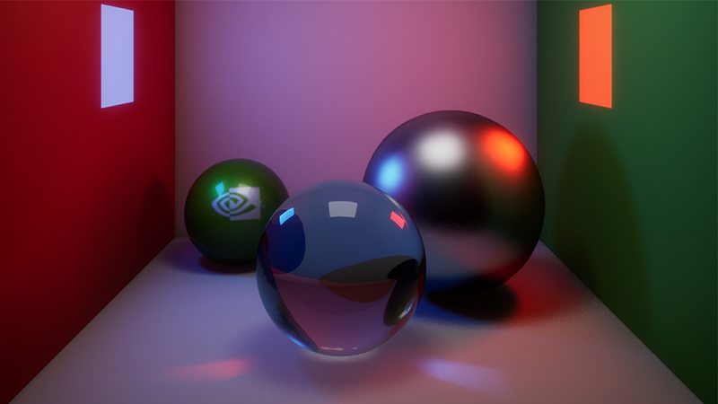
Graphic rendering
C++
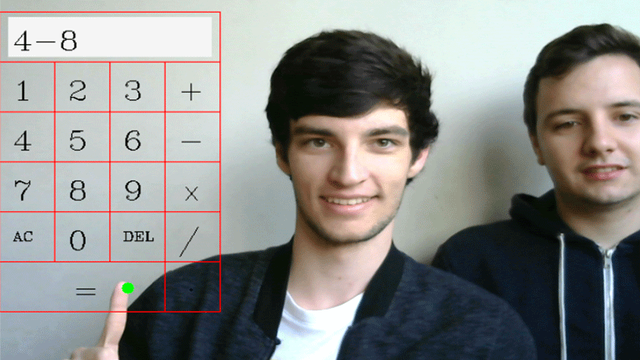
Webcam project
C++ and OpenCV
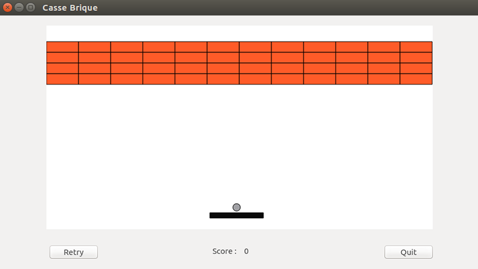
Brick-breaker
C++ and Qt
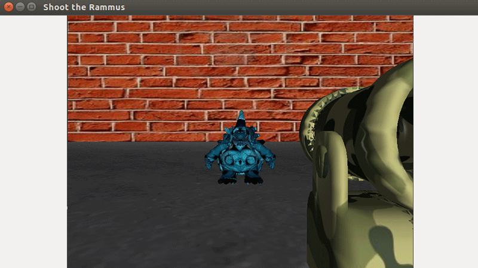
Shoot the Rammus
C++ and OpenGL
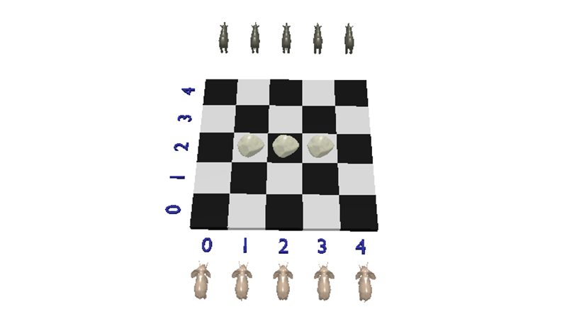
Siam game
C
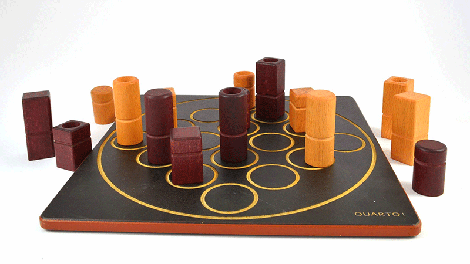
Quarto
C
Rubik's Cube
I sometimes take my old Rubik's Cube out of the closet to see if I can still solve it... And then one day I thought it might be good for my next personal project. So I started creating a 3x3 Rubik's Cube simulation with Unity.
I started with creating the 3D elements (cubes with colors), placed the camera and added colliders on the visible sides of the cube to allow mouse interactions. Then I added some UI elements (buttons to shuffle and to rotate the cube). From there, I was able to program the visual part of the cube movement (rotation of a face when the mouse is clicked or of the whole cube when the arrow buttons are pressed). I had some difficulties managing the rotation of the elements relative to each other, but I finally found a solution by changing the cubes' parent in the scene hierarchy just before starting the rotation. I then restricted the mouse inputs to wait for the end of the current rotation before accepting another request, using a state machine.
A few weeks later, I tackled the "logical" aspect of the cube, which gave me a hard time. I wanted to find a very generic solution that would allow me, for example, to make a 2x2 cube work as well, but no matter how I turned the problem in my head I couldn't find a solution. I finally came up with a very specific solution for the 3x3 cube, but it worked perfectly (if you want to know more about it, please check the source code on my GitHub).
Then, I decided to add a tool that automatically plays a sequence of rotations, allowing Rubik's Cube pros to solve it using algorithms.
I finished by adding a highlight effect, a victory screen, some animations, changing some colors... and ta-da! My Rubik's Cube was finished and ready to be shared with the community.
Emulated version playable on my itch.io. Source code available on my GitHub
Slide'n'Ride
I received the Gamebuino META as a gift and I had been looking for quite some time for a game idea to create with the API proposed by Gamebuino. I finally decided to create a first level of what I called Slide'n'Ride. The game consists in making the blue square pass over all the white squares at least once, without passing over the same place more than 3 times. The only problem is that the floor is frozen and the square slides from one wall to another, so... it's not that easy!
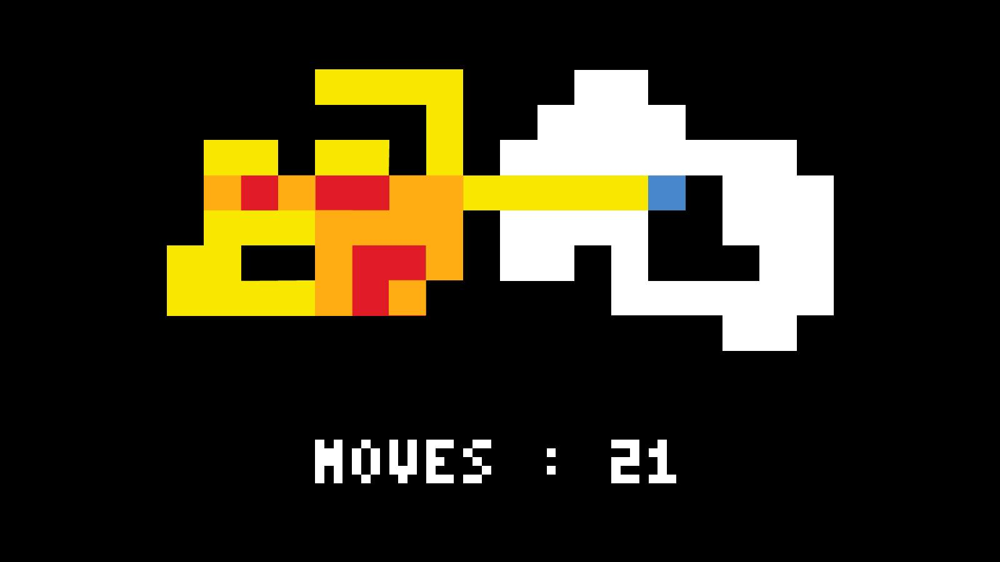
The idea came to me from my memories of Pokémon Silver Version, a game in which you enter a cave where the slippery frozen ground forces you to break your head to find the right path.
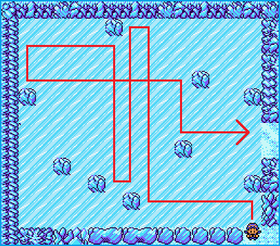
This project was rather short to complete (5h) but I was able to experiment what video game programming must have looked like a few decades ago, which only made me wonder more about how games are made today. Yes, the Gamebuino API allows you to display pixels, rectangles or text, but the level of abstraction is still very low compared to 3D engines programming like Unity.
Emulated version playable on Gamebuino's website. Source code available on my GitHub
Tequenne
During the "Video Games" module, we were able to discover the Irrlicht game engine, version 1.0 of which dates back to 2006. It has the advantage of being Open Source and cross platform, but does not offer many features already implemented. It was ideal to see the evolution made with more recent game engines like Unity or Unreal.
We were asked to code with C++ and using Irrlicht, a video game of our choice, in pairs, in 16 hours. I worked with Pedro Foletto-Pimenta on this project, and we had the idea to create a minimalist version of the very famous Tekken 3 (released by Namco on Playstation in 1998).
The game is therefore in the form of a battle arena where two characters controlled by both players compete against each other (no AI available). The goal is to win 2 sets by knocking out your opponent or having more life at the end of the time limit. To fight, you can use the directional arrows to move or dodge, and the attack keys to kick or punch.
The animations were made with Blender: after loading a model available on the internet, I applied rigging, skinning and movements to it, then I imported the model in a Direct X format with Irrlicht.
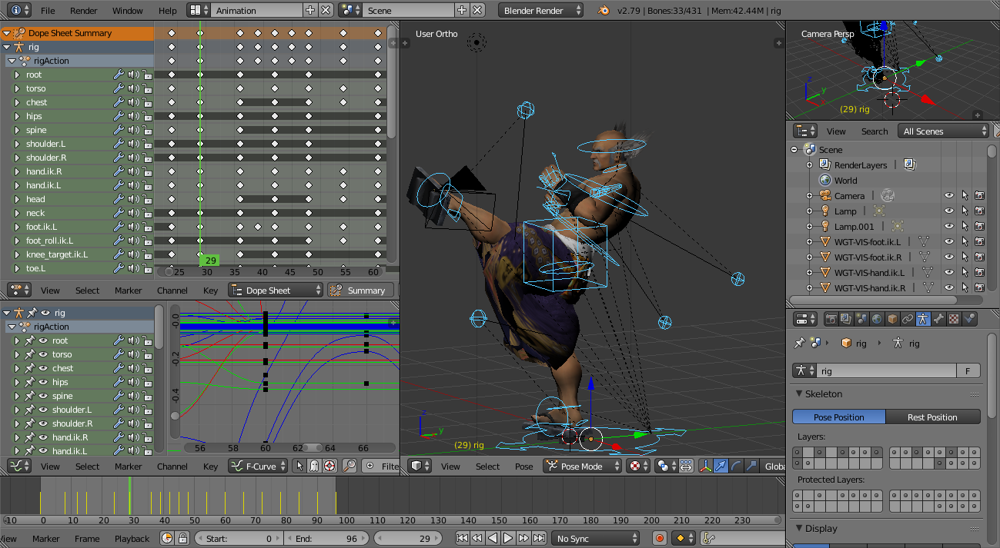
This project was ideal to confront the difficulties that could be encountered when coding a video game. Indeed, I learned how to insert animations, how to manage the flow of time in the game and also how to control the camera. As this type of program must constantly display something, it was necessary to think about the different state variables, and the management of the interaction with the keyboard to keep a good fluidity.
A version of this game is available for download on my GitHub
Kinect project (96h)
With Edouard Mior and Théo Leplomb, I participated in the creation of our Air Drums application during the 96-hour major project. During this project, we decided to work with Microsoft's Kinect camera to create a virtual battery, which we can play with our hands. Our idea then evolved to give a rhythmic game similar to Guitar Hero or Rock Band, but using the camera as an interaction.
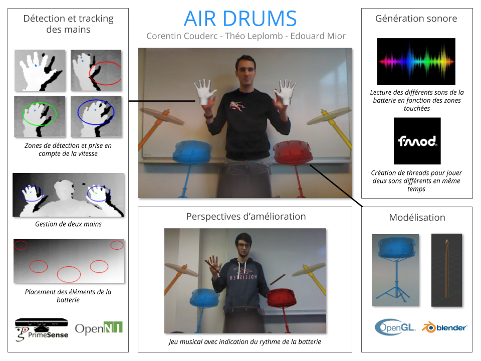
The Kinect library has a fairly complete API on the detection and tracking of hand positions once they have been detected (by a pushing movement for example). We then created 5 zones that correspond to the locations of the battery cells. Entering these areas with your hand by applying a top-down movement then activates the detection.
Then we added the sound part, with the Fmod library. By creating a new thread each time the hand is detected in an area, we were able to play the corresponding sounds. Finally, the display part of the 3D models with OpenGL was the longest and most complex. Once the position had been adapted in relation to the detection zones defined above, we made sure to play with transparency in order to give the user the feeling of hitting something.
For version 2.0, we added dropping drumsticks to indicate the rhythm to follow, as well as background music (due to lack of time for our presentation, the rhythm of appearance of the drumsticks was hand-encoded and matched the music).
Be$tFriends
Being a big football fan, and wanting to watch the 2018 Football World Cup in a slightly more exciting way, I wanted to participate in betting with friends. As I didn't find a solution that suited me on the internet, I challenged myself to program in my free time a betting site entirely with PHP/SQL and HTML/CSS. I was helped by Claire Poinsignon for the design of the different pages and the application as a whole, as well as the mobile integration.
After creating an account and logging in, you will be taken to the main page, containing a reminder of the scores of the last 5 games:
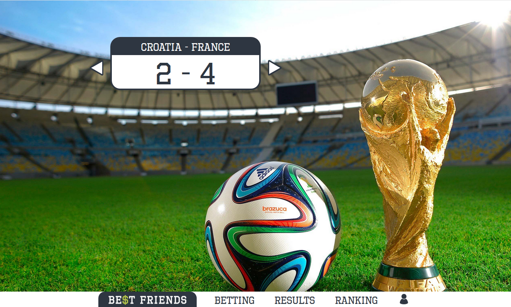
Then after making bets for the next phase in the "Betting" tab, they appear in the "Results" tab. By hovering the mouse over our bets, you can display the real result of the match and compare your results.
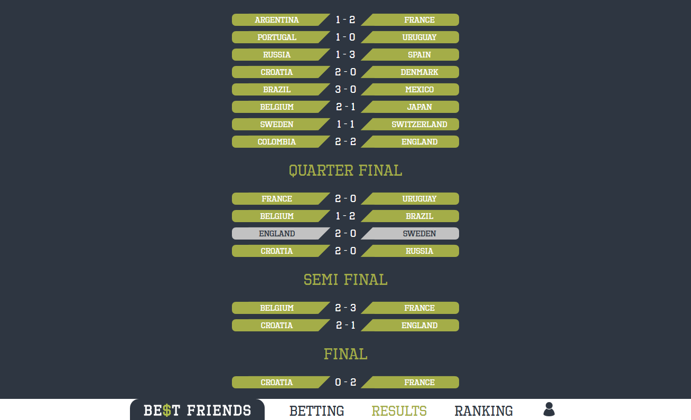
Finally, if you have joined a group with friends or family, you can check your ranking in the "Ranking" tab
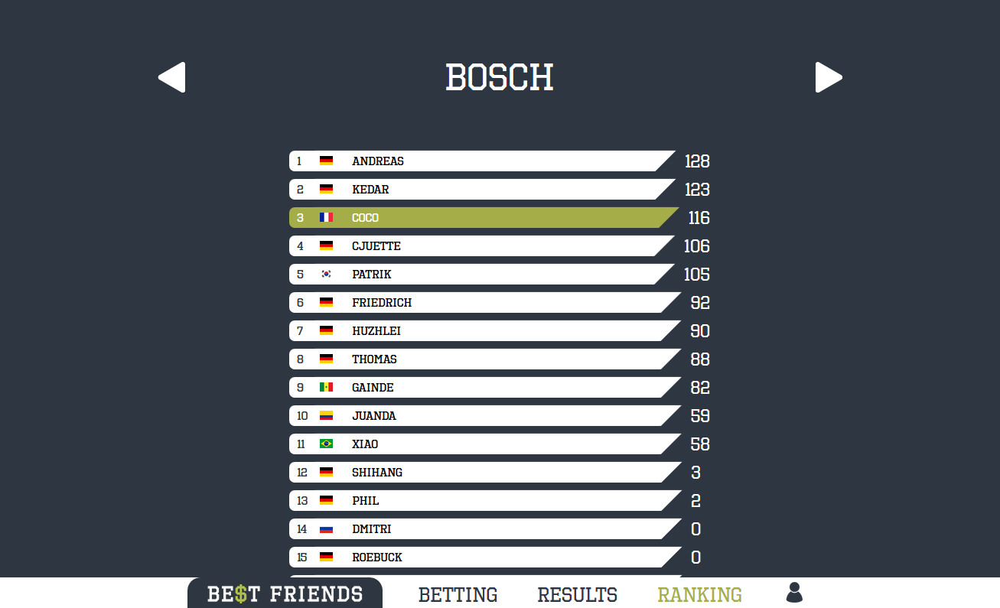
The development of this website has made me progress in web languages and has also shown me what it is like to manage a website (hosting, database backups, bugs). My mistakes allowed me to learn and finally the site was used by about fifty people, some of whom I didn't even know. And then France won the cup so... it could only go well!
The link : https://www.besstfriends.com
GPU programming
During the GPU programming courses, we learned how to use OpenGL and shaders to display textured meshes with Phong illumination.
After having mastered the use of fragment shader and vertex shader, we studied more complex tools such as Frame Buffer Object (FBO), Transform Feedback...
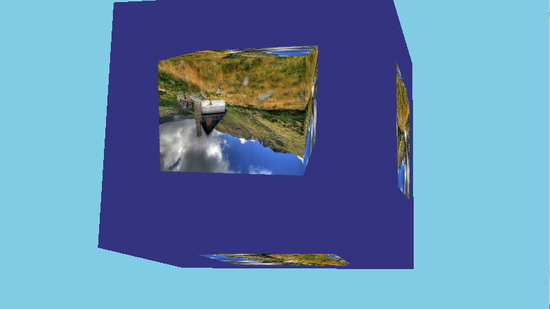
We have learned to use geometry shaders to display the normals of a mesh, perform culling (display only the triangles visible from the camera's point of view), or deform a mesh completely:
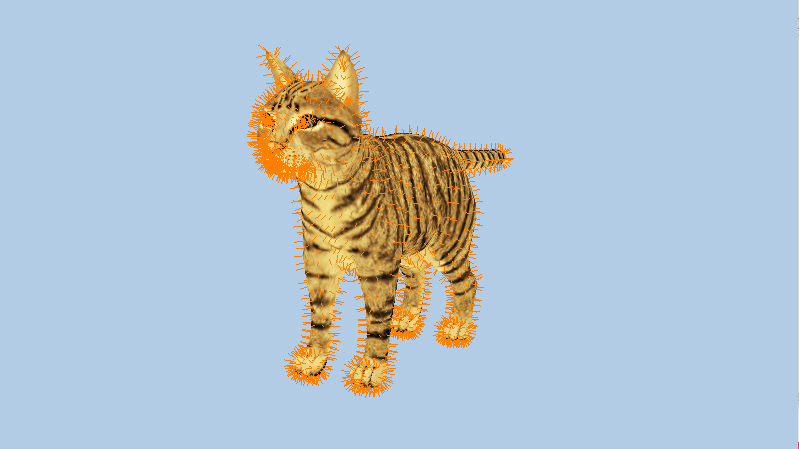
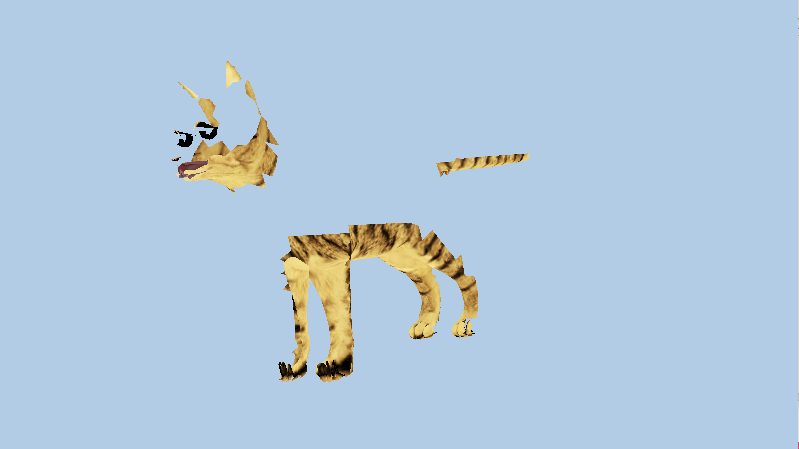
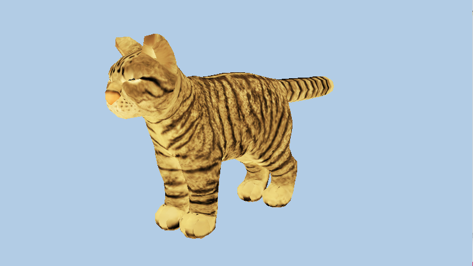
We finally applied all this knowledge in the advanced shader course, where we saw the parallax effect and the marching-cubes algorithm. With a map of normals and depths, we were able to add a relief effect to a brick wall texture, and also from a density function create a very complex rock shape:
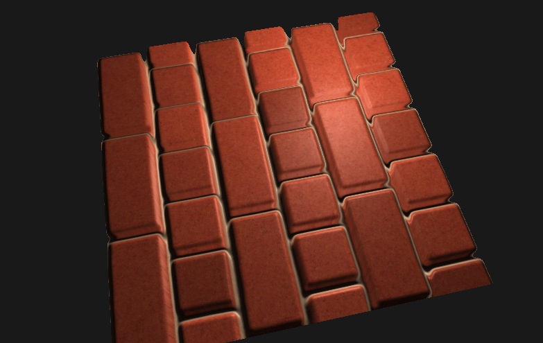
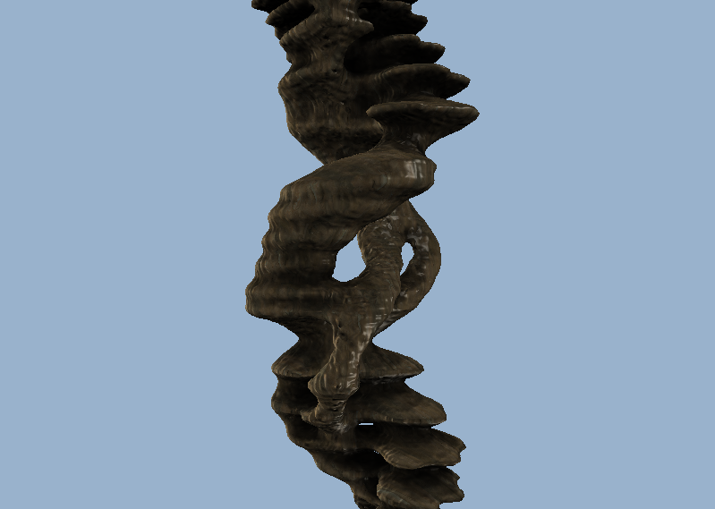
Sonic the Hedgehog
I chose to follow an optional module teaching the use of Blender software, through tutorials and a final rendering. For this rendering, I decided to model Sonic the famous SEGA character.
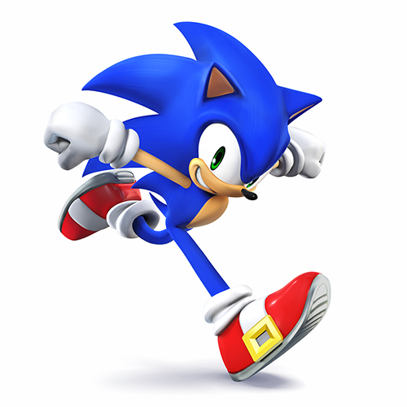
I started by downloading a detailed sheet of Sonic's different points of view, and I created his vertex-by-vertex model. I also used Youtube videos showing me some details to simplify the work. I also added color to the different elements of the model.
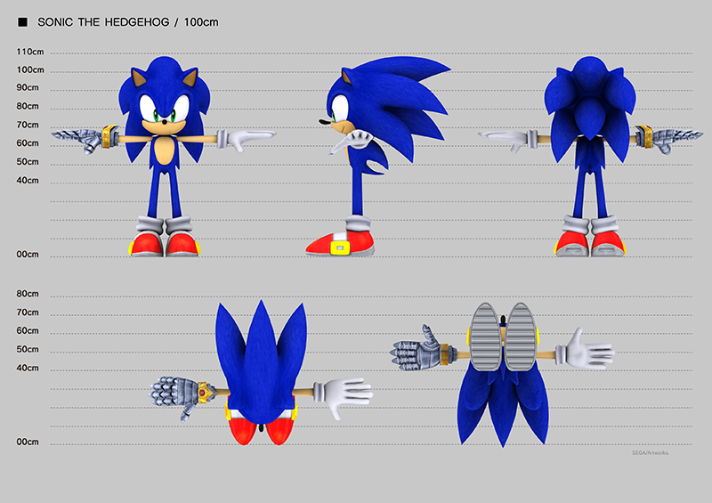
Finally, I added a skeleton and skinning weights to it to modify its posture and create an animation.
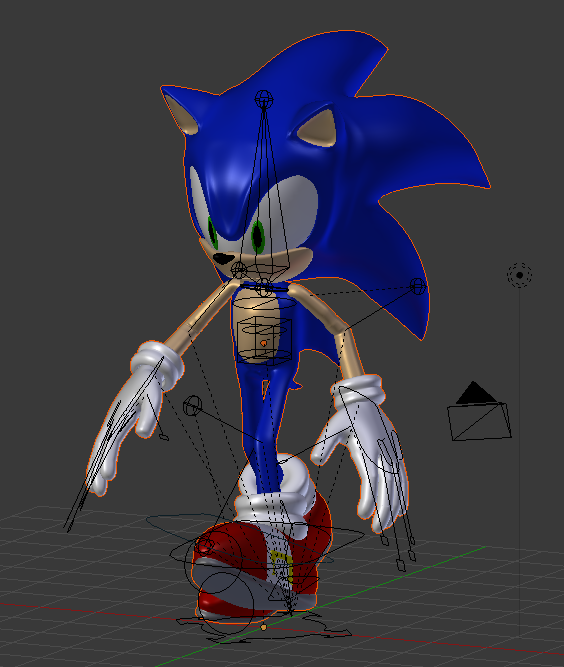
Animation - Simulation
During the animation courses, we learned to apply skinning weights to our meshes and to deform them in order to obtain an animation. We started by deforming a simple cylinder, with fixed weights, then variable weights along its height. We associated positions with keyframes, then interpolated the different vertex positions between these keyframes. Finally, we have extended this code to animate a cat's mesh: ears, legs, tongue and tail.
Simulation courses taught us how to model physical systems with simulated forces, impacting the position and velocity of particles modelled by vertices. Here, we worked on the example of a fabric composed of a mesh of 30x30 vertex, whose tensile forces were modelled by springs (structural, shear and curvature). We then model the effect of gravity on the tissue attached by two ends, as well as the curvatures of the tissue related to obstacles (sphere and plane).
Graphic rendering
During the 3D modeling courses, we saw different graphic rendering methods including projection and ray-tracing... We had to implement each of these methods based on a code structure whose various essential functions we had to perform in C++.
Projective rendering is based on the representation of a 3D shape by a set of triangles. We therefore implemented the drawing functions on the image space of a point, a line, then a triangle, by implementing color and depth interpolations. Then, we performed the display of the mesh of a dinosaur, with the Phong illumination calculation and implemented the interpolation of texture colors. Finally we created a fragment shader to interpolate at each pixel the color of the corresponding texture.
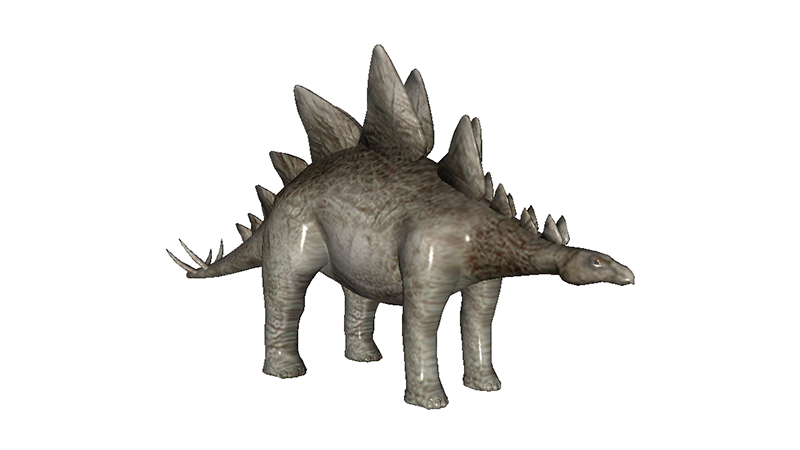
Ray-tracing consists in representing objects by considering the physical aspect of the light radiation (shadows, reflections). To do this, it is necessary to calculate intersections between our rays and the objects in the scene for each pixel of our image. We have therefore implemented intersection calculations for our different objects, shading and illumination calculations, and functions related to the reflection of the different objects in the image. We then improved our rendering by adding an anti-aliasing algorithm.
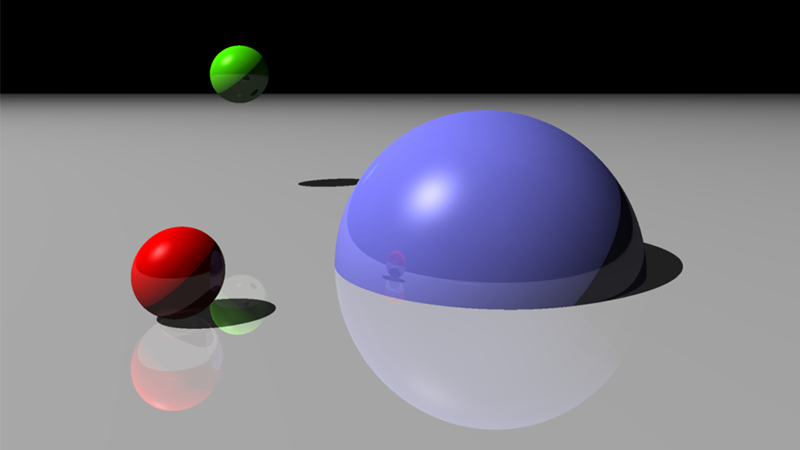
Webcam project
During the 4th year at CPE, it is asked to carry out a 40-hour project in pairs to deepen the subjects seen during the courses. Maxime Castello and I chose to use OpenCV and a webcam to do real-time processing. We had free choice of application and decided to create a graphing calculator that could be used with the finger of our hand. We were using the OpenCV library for the first time and coding in C++ language.
We learned how to read a frame from the webcam and display it, then how to add graphic information on this display with Qt (painter, rectangle...) which allowed to create the buttons of the calculator. We discovered basic image processing to detect the skin, including thresholding in the HSV space, to isolate the hand. Then we used contour detection to try to determine the position of the finger. We used the distance between the contour barycentre and its constituent points as a basis, taking the furthest distance (when pointing with any finger, this maximum distance is obtained at the fingertip).
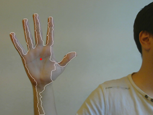
We then detected the position of this point on the contour, normally at the fingertip used to tap the virtual calculator keys, and matched the value "clicked" by the finger to display it. Finally, when you press the "=" key, the result is calculated by a homemade calculator program (parser) and displayed by the calculator.
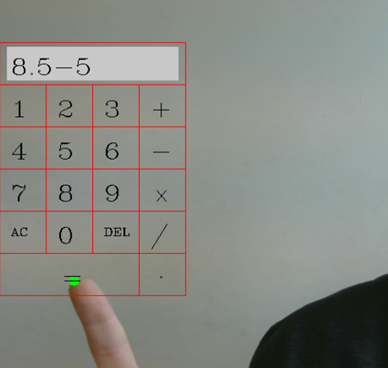
Brick-breaker
This project is an optional work requested as part of a course/practical work on Qt and its GUI libraries. This program coded in C++ is the work of Maxime Castello and myself. The goal was to use Qt to create a brick-breaker game, with the addition of bonuses/malus if possible.
To keep a consistent code structure, we used classes, to separate the bricks, the ball, the pad, and the bonus/malus. The set of bricks is actually a list of rectangles of the same color and size, placed next to each other. The pad is controlled with the mouse on the horizontal line at the bottom of the window. The ball moves forward on the window by time integration (clock) and bounces against the walls, bricks and pad by reflecting the incident speed. Bonuses and maluses are randomly contained in the blocks and fall at a constant speed when this block is destroyed. If the pad catches them then their effects are triggered: increase / decrease of the ball speed, increase / decrease of the pad size.

If the ball touches the bottom wall of the window, the game is lost, you can then see your score and start again. If all the bricks have been destroyed, you won and the game is over.
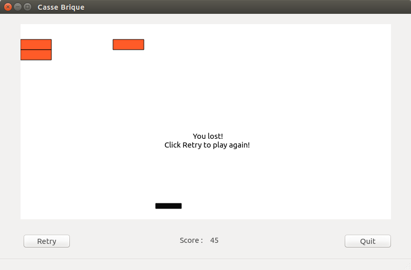
Shoot the Rammus
This project was part of the programming introduction module with OpenGL, following an introductory practical work. It involved using functions already provided (loading an object, texture associations, shaders etc...) by modifying them to create a mini video game. The main instruction was simply to use at least 3 different reference systems, which are here the cannon, the Rammus and the building in which the characters move.
The game is a kind of Shoot'em Up FPS version. With W,A,S,D we control our character and move him forward through the scene. With our mouse we can turn left or right, and trigger the firing of a cannonball by a left click. If we touch the Rammus, it disappears from the map while others appear as they converge towards us. It is therefore necessary to be skilled at shooting in order to reduce their number and not to be overwhelmed. If only one of the Rammus hits us, the game stops and you can then start again to improve your score. Our final score is calculated based on the number of total Rammus eliminated and the length of time we managed to stay alive.
So I had to implement different functions executed at each display callback such as the calculation of collisions, the transformations to apply to objects at each movement of the character or the mouse, the time and point count... The camera is placed in such a way as to give the illusion of being in a character's eyes and the gun is located very close to the camera, but on the side so as not to obstruct the vision. When the character moves, a translation is performed on all other objects in the scene except the cannon and the camera. When the mouse moves, these objects are rotated.
The character cannot pass through the walls, and the game stops when he collides with a Rammus. For shooting management, we consider a hitbox in the shape of a sphere around the Rammus, that the bullet intersects or not. The barrel is slightly animated to give an impression of recoil and reloading time. The hit Rammus disappear, and during this time others appear randomly on the map as they converge on the character. The rate at which they appear increases as the game progresses, making survival more and more difficult.
Siam game
I carried out this project in collaboration with Sébastien Altounian. We had to develop in C an unknown board game: Siam. It was during my first year of school (3rd year after high school), just after I learned the basics of the C language. As we discovered the language, the rules, game design and function names were given. All we had to do was complete, rewrite, add descriptions in the header files in order to learn good methods such as using assert, give an understandable name to our variables, comment on our code, write test codes, debug etc.....
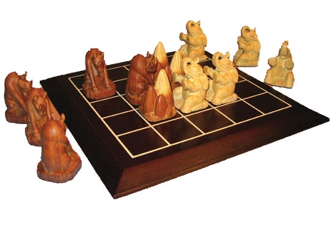
The code was developed with Qtcreator under Linux. The teacher also added a viewer to give an impression of realism.
Quarto
The game is a board game, which is a kind of tic tac toe 2.0.
This project was my first game project in C during my 1st year at CPE (3rd year of higher education). I had just had C language classes for 6 weeks when I had to develop this game. In pairs, with Margaux Masson, we had 2 hours to think about the implementation and 4 hours to write and test the game code that is displayed directly on the terminal.
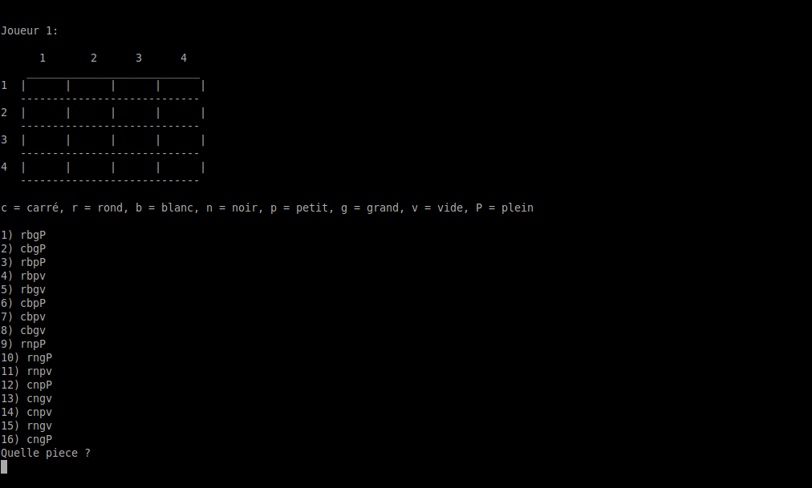